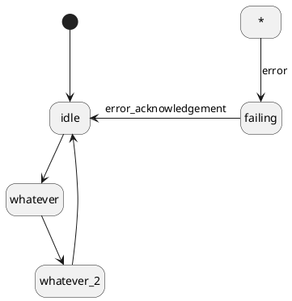

Definition
The undefined state is a predefined state that is active during external transitions. This is a safety feature that is not part of the UML specification.
The undefined state is activated right before the execution of the transition and deactivated (for the benefit of the target state) right after the execution of the transition.
Why We Need the Undefined State
Executing an external transition mainly consists of:
- executing the exit action of the source state;
- executing the transition action;
- executing the entry action of the target state.
Also, at some point, the target state must be activated (i.e. marked as the active state of the region).
Problem: any of these steps can throw an exception, and there's no obvious choice for the resulting active state in case of exception.
- We can't reasonably keep the source state active. What if we already invoked its exit action? We don't want to risk using deallocated resources from an internal action, or deallocate resources twice, or even try to invoke that exit action again if it's the one that threw.
- We can't reasonably activate the target state either. What if it has an entry action that we couldn't successfully execute? We don't want to risk using or releasing non-allocated resources from an internal action or an exit action. Even in the absence of an entry action, we don't want to go against the behavior defined in the transition table by activating a state without properly executing the action of the transition that leads to it.
This is why Maki has made the choice of a third outcome: the activation of another state that doesn't have an entry action (so that its activation can't throw another exception).
How to Use the Undefined State with Maki
Maki defines these two objects:
To take advantage of the undefined state, you should define, in every topmost region, a transition whose:
Such a setup would look like this:

A typical setup for exception recovery
- Note
- While it can be relevant, you don't necessarily have to define transitions from the undefined state in composite states. The guarantees provided by the undefined state allow you to exit any active composite state without having to worry about executing an irrelevant exit action.
 1.14.0
1.14.0